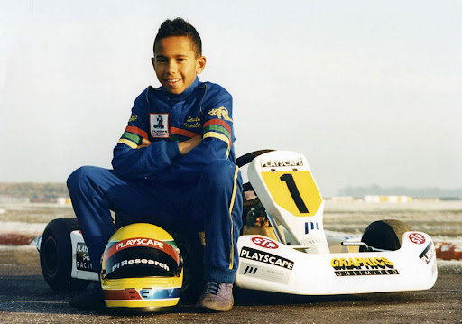
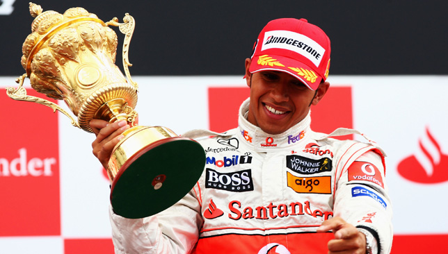
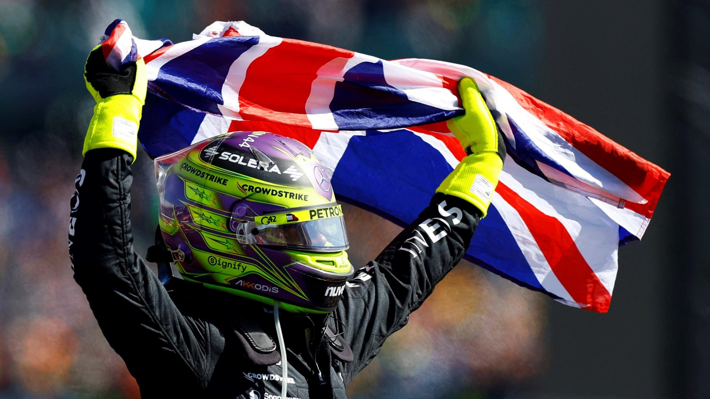
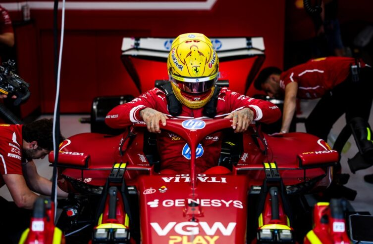
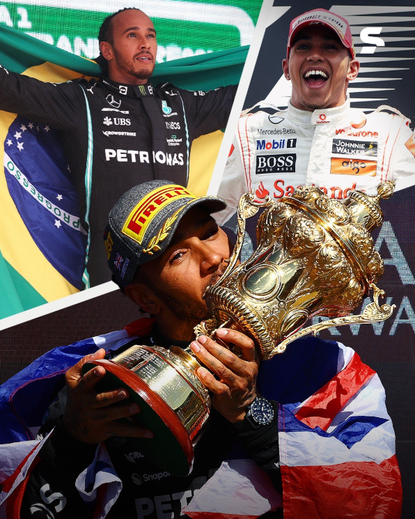
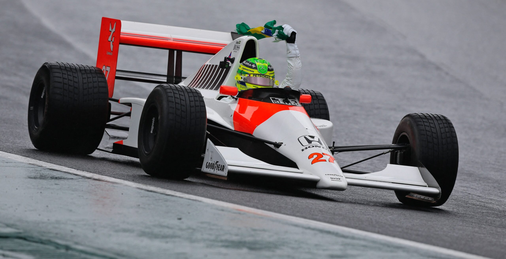

Lewis Hamilton
Lewis Hamilton é um piloto britânico da Fórmula 1, nascido em 1985. Ele é o piloto com mais títulos mundiais na
história do esporte, ao lado de Michael Schumacher.
É amplamente considerado um dos maiores da história, conhecido por sua velocidade implacável e sua capacidade de
superar adversidades
Trajetória:
🏎️ O Início e a Promessa (1985 - 2006)

De origem humilde, ele começou no kart aos 8 anos. O momento que mudou sua vida
ocorreu aos 10 anos, quando ele abordou Ron Dennis, então chefe da McLaren, e disse: "Um dia quero correr
nos
seus carros".
- Apoio da McLaren: Impressionado, Dennis o contratou para o programa de jovens pilotos aos
13 anos.
- Domínio na Base: Ele venceu quase tudo por onde passou, incluindo a Fórmula 3 Europeia e a
GP2 (atual Fórmula 2) em 2006, com uma performance avassaladora que forçou sua promoção à F1.
🚀 Estreia Explosiva e o Primeiro Título (2007 - 2012)

Hamilton estreou na Fórmula 1 em 2007 pela McLaren, ao lado do então bicampeão Fernando Alonso.
- 2007: Quase campeão no ano de estreia, perdendo o título por apenas um ponto para Kimi
Raikkonen após uma rivalidade intensa com Alonso.
- 2008: O primeiro título mundial. Em uma das finais mais dramáticas da história, em
Interlagos, ele ultrapassou Timo Glock na última curva da última volta, tirando o título das mãos de
Felipe
Massa.
- Anos de Luta: Entre 2009 e 2012, a McLaren não conseguiu entregar o melhor carro do grid, e
Lewis viu o domínio da Red Bull com Sebastian Vettel.
⚡ A Era de Ouro na Mercedes (2013 - 2021)

Em 2013, Hamilton tomou a decisão mais arriscada de sua carreira: deixou a McLaren pela Mercedes, que na época
era
uma equipe de meio de tabela. Muitos críticos disseram que seria o fim de sua carreira vitoriosa.
- Domínio Híbrido: Com a mudança do regulamento para motores híbridos em 2014, a Mercedes se
tornou imbatível.
- Heptacampeonato: Hamilton conquistou os títulos de 2014, 2015, 2017, 2018, 2019 e 2020,
igualando o recorde de 7 títulos de Michael Schumacher.
- Recordes: Ele se tornou o piloto com mais vitórias, mais pole positions e mais pódios na
história da categoria.
- A Batalha de 2021: Uma das temporadas mais épicas da F1, decidida na última volta da última
corrida em Abu Dhabi, onde Max Verstappen levou o título após uma relargada controversa.
🌍 Além das Pistas e o Futuro na Ferrari

Nos últimos anos, Hamilton transformou sua plataforma em um espaço para o ativismo, lutando por diversidade no
automobilismo e direitos civis.
- Dificuldades Técnicas (2022-2024): A Mercedes enfrentou problemas com os novos regulamentos
de efeito solo, e Hamilton passou por um longo jejum de vitórias, quebrado de forma emocionante no GP de
Silverstone em 2024.
- A "Bomba" de 2025: Em um movimento que chocou o mundo, Lewis anunciou que deixará a
Mercedes após 12 anos para realizar o sonho de correr pela Ferrari a partir de 2025.
Estatísticas:
| Vitórias |
Pódios |
Poles |
Corridas |
| 105 |
203 |
104 |
380+ |

| Títulos Conquistados |
| Temporada |
Equipe |
Vitórias |
Pódios |
Poles |
| 2008 |
McLaren |
5 |
10 |
7 |
| 2014 |
Mercedes |
11 |
16 |
7 |
| 2015 |
Mercedes |
10 |
17 |
11 |
| 2017 |
Mercedes |
9 |
13 |
11 |
| 2018 |
Mercedes |
11 |
17 |
11 |
| 2019 |
Mercedes |
11 |
17 |
5 |
| 2020 |
Mercedes |
11 |
14 |
10 |
-
Destaques
- Títulos: Heptacampeão mundial (2008, 2014-2020)
- Recordes: Mais vitórias, mais poles e mais pódios na história da F1
- Equipes: Estreou na McLaren (2007), brilhou na Mercedes (2013-2024) e mudou-se
para a Ferrari em 2025.
- Ativismo: Engajado em causas sociais, especialmente na luta contra o racismo e
na promoção da sustentabilidade.
- Fase Atual: Passou por uma temporada difícil na Ferrari em 2025, enfrentando
desafios com o carro e adaptação
- Cidadão Honorário: Recebeu o título de cidadão honorário brasileiro.
- Rivalidades:Também foi marcado por rivalidades intensas, especialmente com
Fernando Alonso, Nico Rosberg,
Sebastian Vettel e Max Verstappen.
-
Ídolo
O maior ídolo de Lewis Hamilton no automobilismo é o brasileiro Ayrton Senna. O heptacampeão
britânico cita Senna como sua principal inspiração desde a infância, admirando sua pilotagem,
obstinação, foco e valores. Hamilton frequentemente homenageia Senna com capacetes amarelos e
igualou marcas históricas do ídolo, como número de poles e vitórias.
- Conexão de Infância: Hamilton afirmou que não seria piloto se não fosse por Senna,
assistindo a vídeos do brasileiro para estudar sua técnica e postura.
- Homenagens: Em 2017, após igualar as 65 poles de Senna, Hamilton foi presenteado
com um capacete do ídolo. Em 2024, pilotou a McLaren original de Senna no GP de São Paulo.

⭠ Voltar para a lista de pilotos